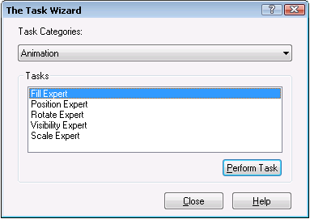

Using animation, command, and picture experts
DeltaV Operate provides a set of experts that can be accessed in a number of different ways. In simplest terms, an expert is a dialog box that requires minimal input to quickly perform a task, such as selecting a background color, rotating an object, opening a picture, or changing the refresh rate of an object.
The Task Wizard
 Most experts can be quickly accessed by clicking their buttons on
the DeltaV Operate toolbars or in the Toolbox. However, the Task Wizard button
provides easy access to almost every expert through an easy-to-use dialog box
that does not require toolbars and does not take up valuable screen space.
Most experts can be quickly accessed by clicking their buttons on
the DeltaV Operate toolbars or in the Toolbox. However, the Task Wizard button
provides easy access to almost every expert through an easy-to-use dialog box
that does not require toolbars and does not take up valuable screen space.

Experts are divided into three Task Categories: Animation, Command, and Picture. For detailed help on most experts, click the Help button on the expert dialog box. Some of the Command Experts are DeltaV Operate Experts; their names are prefaced with "DeltaV." The dialog boxes for these experts do not have Help buttons. For detailed information, refer to DeltaV Operate Experts.
Some infrequently used experts are not listed in the Task Wizard categories and are also not included in the default toolbars. These can be found by opening the Customize Toolbars dialog box and selecting the Buttons tab. (To open the Customize Toolbars dialog, select Toolbars from the Workspace menu and click the Customize button on the Toolbars dialog.) The Buttons tab lists the available buttons in the DeltaV system. You can add any of these buttons to an existing toolbar or create your own toolbar. For more information, refer to the Modifying Existing Toolbars topic.
You can also create your own experts to help you automate processes that you do often. This can be done through VBA scripts.
Animation Experts
The following table describes the functions performed by the Animation Experts. These experts can be accessed in the following ways:
Through the Animations category of the Task Wizard, as described above
By clicking the desired animation tool on the DeltaV Animation Experts toolbar
By right-clicking an object on a picture and selecting Animations from the context menu. This opens either a one-page Basic Animations Dialog or a multipage Animations dialog that contains all the Animation Experts.
All of the experts in the Animation category of the Task Wizard have re-entrance functionality, described at the end of this topic.
Picture Experts
The following table describes the functions performed by the Picture Experts. Access these experts through the Task Wizard.


The following table describes the functions performed by the DeltaV Operating Experts. Access these experts through the Task Wizard or the DeltaV Operating Experts toolbar. For more information, refer to DeltaV Operate Experts.
Command Experts
The following two tables describes the functions performed by the Command Experts and DeltaV Operate Experts. Access these experts through the Command category of the Task Wizard or by their buttons on various standard DeltaV toolbars.
The experts in the first table below each have a check box on the configuration dialog that you can choose to allow the user to select items in the run environment.
DeltaV Operate Experts (Command Category)
The following table describes the functions performed by the DeltaV Operate Experts. Access these experts through the Task Wizard or their buttons on the DeltaV Operating Experts toolbar. Refer to DeltaV Operate Experts for additional information.


Tips for Using DeltaV Operate Experts
For most experts, it is required that you select a shape on your picture before you attempt to use an expert. If you try to add an expert to a shape that already has an expert, you will receive a warning message. Double-click the item to see if it already has an expert. (If the item is grouped, use the Enter Drill Down command, and then double-click it.)
Do not apply experts to a grouped object that contains an ActiveX control. The ActiveX control handles the click event, so the expert that was applied to the group does not work. Likewise, do not apply experts to non-ActiveX control objects and then group those objects with ActiveX control objects. When applying experts to grouped objects, first apply the expert (such as the Replace Picture Expert) to the object, and then group these objects with other objects (such as text, rectangles, etc.). For more information on ActiveX controls, refer to the Using ActiveX Controls topic.
For all the experts, the OK button saves any changes that you made and closes the expert; the Cancel button closes the expert without saving any changes.
Re-entering Experts
All of the experts in the Animation category of the Task Wizard have re-entrance functionality, allowing you to exit the expert, make any changes you wish within your picture, and then go back into the expert to resume inputting data to complete the task. You can also re-enter the Data Entry Expert.
The Data Entry Expert writes a script to a selected object; therefore, it will not retain its re-entrance functionality if you change the code. Instead, it will act as though there are no data entry parameters, and will therefore write over the existing script.